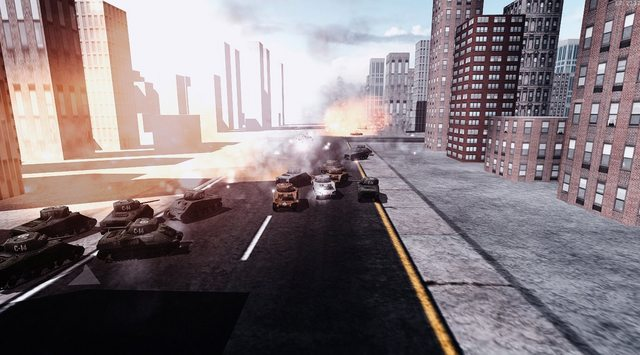
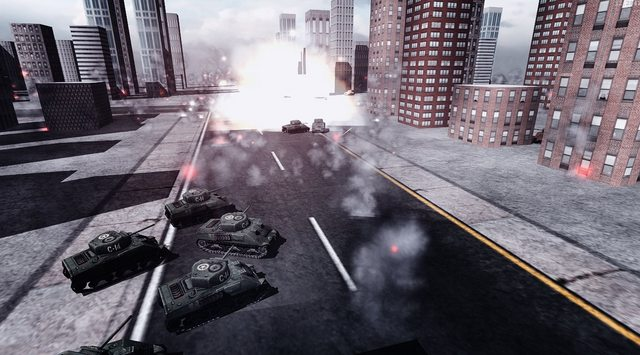

This was first prototyped in Urho3D but it never got to that stage where I can get everything pieced together with a limited amount of time. I tried porting it to other engines, make it work and so eventually I have built a custom one with opengl for renderer and using various frameworks. The game components are not that complicated so I managed to get it all done in a few months and with some help. Custom particle engine, game physics and Direct Audio for 3d sound. Buildings are procedurally generated and randomly textured. I’m still planning to do a mobile version on Urho3D if it ever picks up at some point but for now I’m just glad I got this far.

[video] https://www.youtube.com/watch?feature=player_embedded&v=69f17eTil9U[/video]


I figured this project has a bit of Urho history so I thought sharing this here with you guys.
Cheers.

 ) and this one uses simple FSM.
) and this one uses simple FSM.

 Yes, I know having a multiplayer mode would be really awesome for this game, and that is why this was first prototyped in Urho. I’m curious as to how far I can take this custom engine go, and if I ever hit a wall, I can always try and port it back again.
Yes, I know having a multiplayer mode would be really awesome for this game, and that is why this was first prototyped in Urho. I’m curious as to how far I can take this custom engine go, and if I ever hit a wall, I can always try and port it back again.